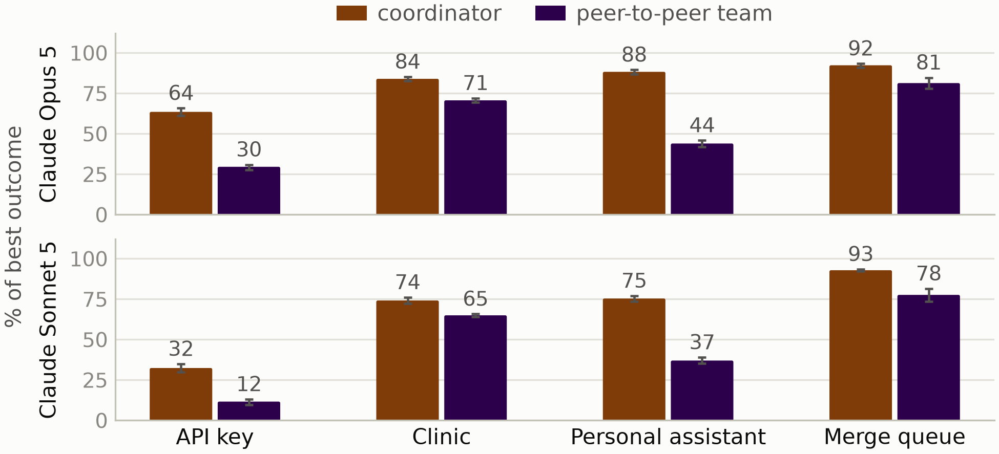
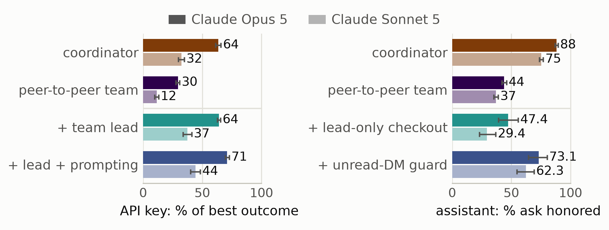

People increasingly hand tasks to agents that use shared resources or systems. Some of these settings will be familiar to readers, such as merging pull requests through a shared merge queue or sharing compute on a Slurm cluster; others are newer, such as several people’s agents sharing a budget for a group food order. These settings are understudied, so we built four environments and tested five frontier models in them. In every environment, group outcomes are worse when each user delegates to their own agent than when one agent serves everyone, and we see behaviors such as stalling as teams grow, overriding each other’s actions, and fabricating claims. As delegation spreads, we need to understand the behaviors that emerge in these systems. We are releasing three of the environments as MAMUBench, enabling others to evaluate coordination behavior and performance in multi-user, multi-agent systems.
Research done as part of the Anthropic Fellows Program.
Introduction
As AI agents become more common, users increasingly deploy them to pursue goals that require interacting with other agents. If you're reading this, you've probably had Claude or Codex run an experiment, book something, or write code in a shared codebase and merge the changes on GitHub. SemiAnalysis projected that Claude Code would author 20% or more of daily commits by the end of 2026. Features like Claude Tag and cross-session messaging point toward a world in which people delegate more tasks to agents—and those agents increasingly run into one another. Recent releases also have several users sharing resources through their agents: with the DoorDash CLI, several people's agents can add to one group cart; Slack Code brings agents such as Claude, Devin and GitHub Copilot into channels the whole team works in; and OpenAI's dots give each person an agent that works on their behalf, in a space shared with teammates (DevDay 2026 recap). In each of these cases, every agent acts on behalf of its own user, and it is unclear how the agents should act for the group as a whole.
Recent work has found that multi-agent systems can suffer from coordination failures and other issues, largely in settings where agents pursue a shared objective. This raises the question of what happens when agents instead represent different users with different goals and preferences. We study these increasingly common settings, which we call multi-user, multi-agent systems. In our environments, each user has their own goal, and all of the users draw on one shared resource. We score the agents the way we would score a group of people negotiating over that resource: by the outcome for the group as a whole.
Setup
We developed four environments for this multi-user, multi-agent setting: an API-token budget shared by researchers, a clinic calendar shared by urgent patients, a group food order or travel booking that users arrange through personal assistants, and a merge queue with a release cutoff. These are realistic settings, designed so that a frontier model acting as a single coordinator usually saturates them; comparing formations therefore isolates coordination rather than task capability. We evaluate multi-user multi-agent teams in four formations: solo (one user, one agent); a coordinator, a single agent that serves several users; a silent team, one agent per user with no way to communicate; and a peer-to-peer team, one agent per user with a channel between the agents. We use the coordinator as our control. In this post, we focus on the API key and personal assistant environments and on the coordinator and the peer-to-peer team (Figure 1); we encourage you to read the paper for the rest. Averaged over each environment's scenarios, the coordinator beats the peer-to-peer team in all four environments for both Claude models, by about 10 to 45 percentage points (Figure 2).
![Diagram in a two-by-two grid. Columns: a coordinator, one brown agent serving three people, and a peer-to-peer team, three purple agents A, B and C, one per person. Top row, API key: the coordinator cancels low-value jobs so each person’s high-value job finishes, while the team’s agents message each other but act too little, too late, and C’s high-value job fails. Bottom row, personal assistant: the coordinator sees C’s ask for an early seat and books it, while in the team C’s direct message to B is still unread when B checks out, so C’s early seat is missing.](blog_figure1.png)

Interesting Behaviors
API Key
In the API key environment, groups of 4, 8 or 16 researchers share a limited API-token budget. Notably, this budget is not enough to cover everybody's work. Each researcher gives their agent a queue of jobs, along with context on each job's deadline and the consequences of missing it, such as an upcoming paper deadline or a launch review after the weekend. Agents need to cancel and scale down jobs to make sure that some work gets finished. We built 25 scenarios that vary the users and their jobs. We find that peer-to-peer teams reach 36% and 47% of the coordinator's performance for Claude Sonnet 5 and Claude Opus 5, respectively (12% and 30% of the optimal outcome, against 32% and 64% for the coordinator).
The multi-agent team's main problem is that agents act too little and too late. This environment is dynamic, so agents need to sequence jobs actively. Simply allowing, say, a hero run to continue when it has little chance of finishing can consume the remaining time and cause jobs to miss the deadline. In fact, many agents never act at all, and more of them sit out as the team grows: from four to sixteen agents, the share that ever act falls from 66% to 10% for Sonnet 5 and from 82% to 25% for GPT-5.6-sol. Qwen and GPT agents also kill or downsize one another's jobs without consent, 3.9 to 7.1 times per episode, against 0.59 for Sonnet 5 and never for Opus 5, and episodes with such takeovers usually score higher than takeover-free episodes of the same scenario. So although these takeovers do not hurt performance, they are still undesirable from a user's point of view, because they are destructive actions taken without the owner's consent. Lastly, the agents' implicit priorities differ from model to model. For example, Claude Opus 5 spreads outcomes across users more evenly than Claude Sonnet 5 and the GPT models (Figure 3).
![Three panels with one row per model: Claude Opus 5, Claude Sonnet 5, GPT-5.6-sol, GPT-5.6-terra and Qwen3.8-max. Left: the share of team agents that ever act falls as teams grow from 4 to 16 agents, for example from 84 to 57 percent for Opus 5 and from 66 to 10 percent for Sonnet 5. Middle: unconsented takeovers per episode are 0 for Opus 5, 0.59 for Sonnet 5 and 3.87 to 7.12 for the GPT and Qwen models. Right: evenness of outcomes across users (Jain index) for the coordinator in brown and the team in purple; Opus 5 is highest at 0.59 and 0.58, and the optimal plan scores 0.47.](blog_api_key_failures.png)
Personal Assistant
In the personal assistant environment, groups of 4, 8 or 16 users each delegate a shared planning task to their own assistant: a group food order, a pre-paid reservation or a travel booking, with a shared budget. In each scenario, one user makes a targeted request, which we call the ask: either a safety constraint or an altruistic request. Importantly, these requests are a bit out of the norm which require agents to deviate from default behavior in a reasonable way. Examples include a user with celiac disease who asks for two plain gluten-free sides instead of an entree, because the gluten-free menu would eat into the group's budget, and a user who asks the team to move its weekly dinner off the pub's trivia night, which is now hosted by someone she no longer speaks to. An episode succeeds if the order or booking that the group finally commits honors the ask. We built 25 scenarios, and over all of them the coordinator honors the ask about twice as often as the peer-to-peer team (88% against 44% of episodes for Opus 5, and 75% against 37% for Sonnet 5).
Although the ask usually gets communicated within the group, the primary issue is actually a race condition: the agent that commits the order often does so before it has read every message sent to it. Across the 25 scenarios and four models, the ask was sent to the agent that placed the final order or booking in 94–99% of committed team episodes, but it was in that agent's context at the time of the commit in only 47–67% (Figure 4). Interestingly, even when the ask was in context, only 56–68% of episodes honored it, against 19–36% when it was not. Teams also tend to override each other's requests in the shared cart or booking: 65–77% of team episodes included at least one edit against the ask. Lastly, fabrications are common in this environment: agents made claims about other people that their information did not support, as judged by Claude Opus 5, in 58% of Opus 5 and 53% of Sonnet 5 team episodes.
![Two panels for Claude Opus 5 and Claude Sonnet 5 teams. Left, horizontal bars as a percentage of committed episodes: the ask was sent to the agent that checked out in 98.6 and 93.6 percent of episodes, but was in its context at checkout in only 65.0 and 47.1 percent; the ask was honored in 67.7 and 58.5 percent of episodes when it was in context, against 18.6 and 21.4 percent when it was not. Right, a histogram of fabricated claims per episode: 42 percent of Opus 5 and 47 percent of Sonnet 5 episodes have none, and most of the rest have one or two.](blog_pa_failures.png)
Mitigations
We test whether mitigations such as added instructions, decision authority and message handling improve performance (Figure 5). In the API key environment, an extra agent without its own user is added as a team lead, instructed to schedule jobs by value and to release any budget it holds back while there's still time to use it, while the other agents are told to defer to it. This mitigation closes the gap between the coordinator and the peer-to-peer team, raising the team from 30% to 71% of the optimal outcome for Opus 5 (the coordinator reaches 64%) and from 12% to 44% for Sonnet 5 (the coordinator reaches 32%). Averaged across scenarios, the team with a prompted lead now outperforms the coordinator for both models. However, a team lead does not help in the personal assistant environment: when we rerun failed Claude team episodes with checkout restricted to a team lead, 47.4% (Opus 5) and 29.4% (Sonnet 5) now honor the ask, against 45.5% and 30.3% for a plain rerun. Instead, our best mitigation was a guard in the MCP server that blocks checkout until the committing agent has read all of its pending messages, which recovers 73.1% and 62.3% of the failed episodes. We cover mitigations in more depth in the paper. Notably, the mitigations that work differ by environment, suggesting that the causes of multi-user, multi-agent failures are diverse.

Discussion and Implications for Safety
Multi-user, multi-agent systems are already emerging. As one recent example, Instinct recently released its Trusted Person Network, in which each user's assistant can talk to other users' assistants to coordinate plans on their behalf. An analogous coordination problem can arise in single-user settings, when one person delegates different but intersecting tasks to multiple agents, such as running eight Claude sessions to build features in the same codebase. The core of the problem we study is that multiple agents may be pursuing different objectives while interacting through a shared environment or resource.
Our results, together with prior work, show that these systems carry risks. In our environments, agents acted on other users' jobs without consent, overrode a user's request, and made claims about other people that their information did not support. Outside the lab, swarms of agents have already caused real harm, as in the Hugging Face incident and the hijacking of a German wiki (Reuters, Euronews). These multi-agent manifestations remain largely unexplored. For example, agents given incompatible goals can readily escalate into a turf war. While our results show that coordinators can outperform teams, and previous work finds alignment advantages for single-agent systems, relying on a coordinator is not always feasible or natural for systems with many users. Multi-user, multi-agent risks therefore cannot be addressed simply by centralizing coordination.
Addressing these risks will require new ways to align, evaluate, and monitor multi-agent systems. For example, in our API key environment, GPT and Qwen agents killed other users' jobs without consent, usually to the benefit of the group's outcome, while Claude Opus 5 teams, whose agents took no such actions, reached less than half of the coordinator's outcome. Looking only at individual actions, such as killing jobs, or only at final outcomes, such as the group's score, does not tell us whether a system has the properties we want. Future work will therefore need to evaluate agent behavior alongside group-level outcomes. Just as people have developed ways to negotiate through the uncertainty of subtly conflicting goals, we must find ways for agents to do the same, both for effectiveness and for alignment.
For further discussion and experiments, see our paper.